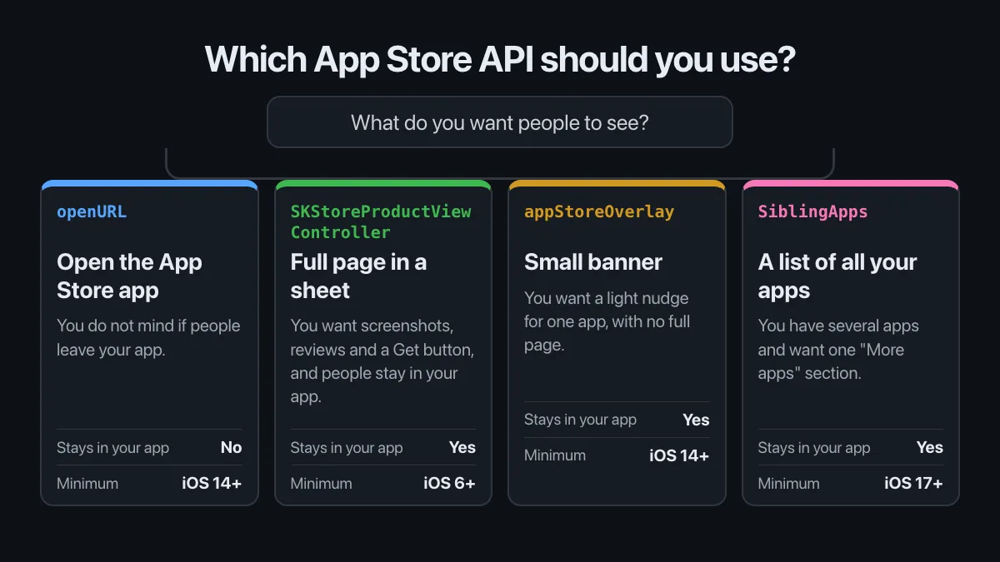
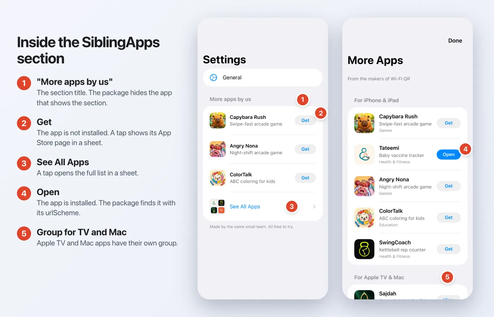
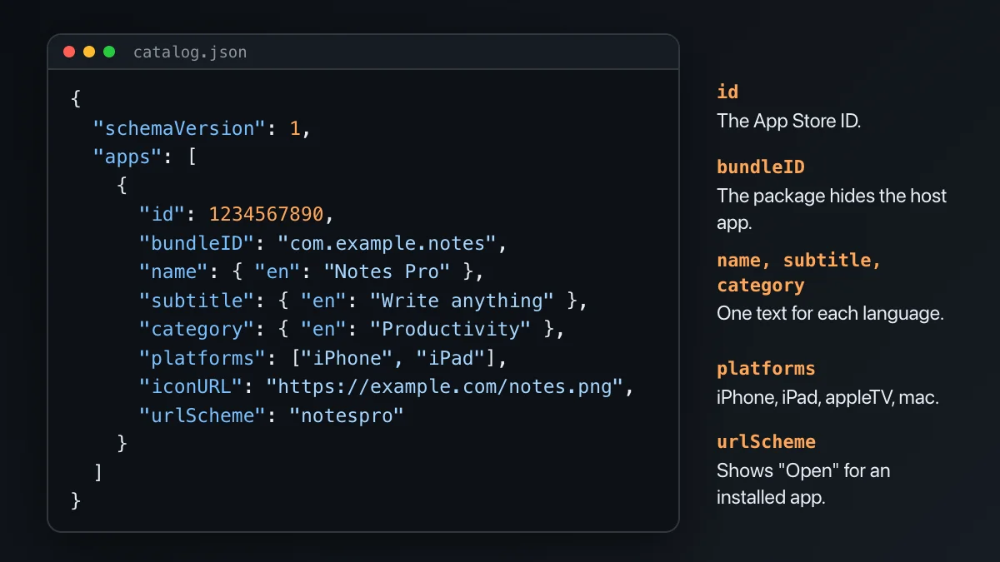
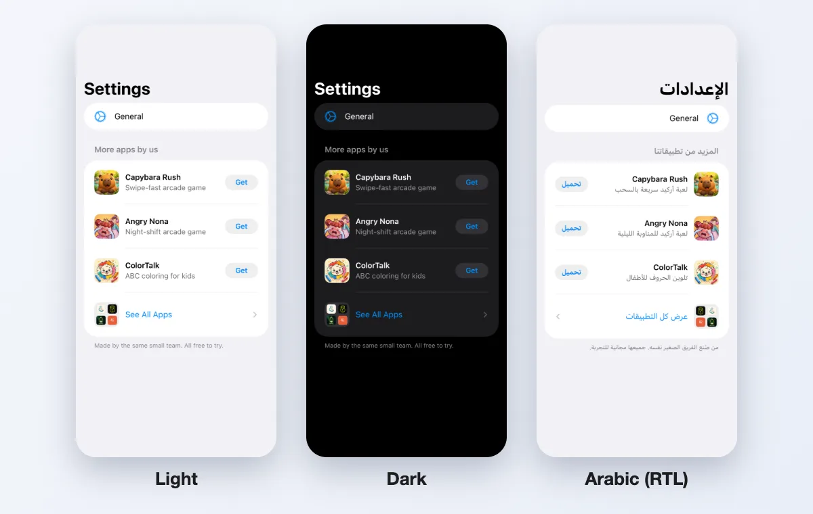
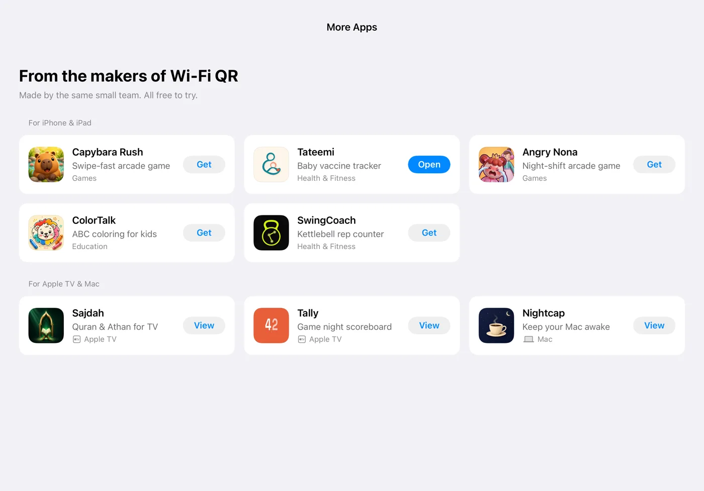

Guide · SwiftUI · StoreKit
SwiftUI Open App Store Page: 3 Ways, With Code
Open an App Store page from SwiftUI with openURL, a product sheet, or an overlay banner. Then show all your other apps with SiblingApps, my open source package.

To open an App Store page from SwiftUI, call openURL with an https://apps.apple.com/app/id… link. To keep people in your app, show the page in an SKStoreProductViewController, or show a banner with .appStoreOverlay. This post shows all three with Swift code.
Then I show SiblingApps, the MIT package I use to show all my other iOS, Mac, and Apple TV apps in Settings. I checked each API against Apple documentation on 21 November 2026. The snippets below were checked against Apple docs, and the product sheet code comes straight from SiblingApps.
Open the App Store from a SwiftUI button
Use the openURL environment value. Apple documents it for iOS 14 and later. The system decides how to open the URL.
import SwiftUI
struct OpenAppStoreButton: View {
@Environment(\.openURL) private var openURL
private let appURL = URL(string: "https://apps.apple.com/app/id1234567890")!
var body: some View {
Button("Open in the App Store") {
openURL(appURL)
}
}
}The link has the form https://apps.apple.com/app/id<App Store ID>. The ID is the number in your app page URL. Apple's archived note QA1633 says to use the standard App Store links when you send people to your app. SwiftUI Link uses the same action, so Link("Open", destination: appURL) also works.
The cost: this leaves your app. For some screens that is fine. For a Settings row, you can do better.
Show the App Store page inside your app (SKStoreProductViewController)
A product sheet shows the full App Store page on top of your app. Use SKStoreProductViewController. It has no SwiftUI view, so you present it from UIKit. Follow these steps:
- Create the controller and set its delegate.
- Call
loadProduct(withParameters:)with the App Store ID. - Present the controller from the top view controller of the active scene.
- Dismiss it in
productViewControllerDidFinish. - If the page does not load, open the web link.
import StoreKit
import UIKit
@MainActor
final class StoreProductPresenter: NSObject, SKStoreProductViewControllerDelegate {
static let shared = StoreProductPresenter()
func present(appID: Int) async {
guard let presenter = Self.topViewController() else { return }
let controller = SKStoreProductViewController()
controller.delegate = self
do {
// Load first, then present (Apple's advice for a smooth sheet).
_ = try await controller.loadProduct(withParameters: [
SKStoreProductParameterITunesItemIdentifier: NSNumber(value: appID)
])
presenter.present(controller, animated: true)
} catch {
// Some pages do not load. Use the web link instead.
if let url = URL(string: "https://apps.apple.com/app/id\(appID)") {
await UIApplication.shared.open(url)
}
}
}
nonisolated func productViewControllerDidFinish(_ viewController: SKStoreProductViewController) {
MainActor.assumeIsolated { viewController.dismiss(animated: true) }
}
private static func topViewController() -> UIViewController? {
let scenes = UIApplication.shared.connectedScenes.compactMap { $0 as? UIWindowScene }
let scene = scenes.first { $0.activationState == .foregroundActive } ?? scenes.first
var top = scene?.keyWindow?.rootViewController
while let presented = top?.presentedViewController, !presented.isBeingDismissed {
top = presented
}
return top
}
}
// In SwiftUI, call it from a button. Do not use .sheet.
Button("View in the App Store") {
Task { await StoreProductPresenter.shared.present(appID: 1234567890) }
}Do not wrap it in a SwiftUI .sheet. Apple says the class does not support subclassing or embedding, and you must use it as it is. A forum post shows what happens: a UIViewControllerRepresentable in a .sheet gives a blank sheet behind the store page. The fix in that post is the same as the code above. Present from the key window's root view controller.
Apple also says that the modalPresentationStyle has no effect on this sheet. On load order, Apple says to load the product before you present, for a smooth result. If you load while you present, the data replaces the content when it arrives. SiblingApps presents first, so the sheet appears at once with a spinner. Both orders work.
Show an App Store overlay banner (SKOverlay and appStoreOverlay)
An overlay is a small banner that recommends an app. Apple documents SKOverlay for iOS 14 and later. In SwiftUI, use the appStoreOverlay modifier. The system presents the overlay over the current scene when isPresented is true.
import SwiftUI
import StoreKit
struct PromoView: View {
@State private var showsOverlay = false
var body: some View {
Button("Show the banner") { showsOverlay = true }
.appStoreOverlay(isPresented: $showsOverlay) {
SKOverlay.AppConfiguration(appIdentifier: "1234567890", position: .bottom)
}
}
}The overlay is not only for App Clips. Apple describes SKOverlay as a way to recommend another app. Only an App Clip must use SKOverlay.AppClipConfiguration, and it can recommend only its full app. An app extension cannot show an overlay.
The AppConfiguration also has campaignToken, providerToken, userDismissible and customProductPageIdentifier:
.appStoreOverlay(isPresented: $showsOverlay) {
let configuration = SKOverlay.AppConfiguration(appIdentifier: "1234567890", position: .bottom)
configuration.campaignToken = "settings-banner"
configuration.providerToken = "YOUR_PROVIDER_TOKEN"
configuration.userDismissible = true
return configuration
}A reported issue: one forum thread says that on iOS 26 an overlay opens the default product page, not the custom product page that you set. The poster says iOS 18 works. The thread has no answer. This is one report, not a confirmed fact. Test it on your target iOS version.
Which API should you use?
| Way | Stays in your app | Shows | Minimum | Good for | Watch out |
|---|---|---|---|---|---|
| openURL | No | The App Store app | iOS 14 (SwiftUI) | One link. Any app or page. The simplest code. | People leave your app. |
| SKStoreProductViewController | Yes | The full product page in a sheet | iOS 6 | Screenshots, reviews and a Get button without a trip to the App Store. | Needs UIKit presentation. Not for .sheet. |
| appStoreOverlay | Yes | A small banner | iOS 14 | A light nudge for one app. | One app only. Not in app extensions. One forum report for iOS 26 custom pages. |
| SiblingApps | Yes | A section and a list of all your apps | iOS 17 | Several apps, with Get or Open for each and one catalog file. | More than you need for one link. It adds a package. |
Measure cross promotion with campaign and provider tokens
You can measure which screen sends people to another app. Apple lets you set two tokens on the product page request. The campaign token is a 40-byte string for your App Analytics campaign. The provider token is for cross promotion. Apple says to use your own provider token for your own apps. Use both together.
In the product sheet, add SKStoreProductParameterCampaignToken and SKStoreProductParameterProviderToken to the parameters. In the overlay, set the two properties in the code above. SiblingApps has a campaignToken setting, with the default "more-apps", and an optional providerToken. Per its README, App Store Connect shows the result in App Analytics under Sources. My apps use one campaign token each, for example tally-settings and angrynona-settings.
Show all your other apps with SiblingApps
If you make more than one app, a link for each app is a lot of code. SiblingApps shows a "More apps by us" section in Settings, a full list, and the App Store sheet. It needs iOS 17 and Swift 6, and it has no third-party dependencies. The latest tag is 0.5.1. The license is MIT.
- Add the package. In Xcode, choose File > Add Package Dependencies and enter
https://github.com/Abdo-codes/SiblingApps. Or use Package.swift:
dependencies: [
.package(url: "https://github.com/Abdo-codes/SiblingApps", from: "0.5.1"),
],
targets: [
.target(name: "MyApp", dependencies: [
.product(name: "SiblingApps", package: "SiblingApps"),
]),
]- List your apps, and put the section in a
ListorForminside aNavigationStack:
import SiblingApps
let moreApps = SiblingAppsConfiguration(
catalog: .inline(Catalog(schemaVersion: 1, apps: [
CatalogApp(
id: 1234567890, // the App Store ID
bundleID: "com.example.notes",
name: LocalizedText(["en": "Notes Pro"]),
subtitle: LocalizedText(["en": "Write anything"]),
category: LocalizedText(["en": "Productivity"]),
platforms: [.iPhone, .iPad],
iconURL: URL(string: "https://example.com/notes.png")
)
]))
)
// Inside a List or Form, inside a NavigationStack:
SiblingAppsSection(configuration: moreApps)
Get and Open. A tap on "Get" shows the App Store page in a sheet, with the same code as above. If the app is installed, the button says "Open", and a tap opens the app. To make this work, give the app a urlScheme in the catalog, and list the scheme in the Info.plist of your app:
<key>LSApplicationQueriesSchemes</key>
<array>
<string>notespro</string>
</array>If a scheme is not in this list, the button says "Get". The package checks again when your app becomes active, so "Get" changes to "Open" after an install. The package also hides the app that shows the section, with no extra code.
The catalog. It is a JSON file. Keep it in your app, or host it and set remoteCatalogURL. The package downloads it when the screen appears, caches it, and ignores a file that has no apps or a larger schemaVersion. New apps then appear without an app update.

SiblingAppsConfiguration(
catalog: .bundled(.main),
remoteCatalogURL: URL(string: "https://example.com/apps/catalog.json"),
campaignToken: "settings-more-apps"
)The section works in light and dark mode and in Arabic. On iPad, the list becomes a grid.


Limits: iOS 17 or later only, and the section needs a List or Form in a NavigationStack. If your Settings screen is not a list, use SiblingAppsSheet from your own row. The SiblingAppsAbdoCatalog product holds my own apps and icons. Do not ship it in your app, because those assets are not under the MIT license. See the changelog for the changes in each version.
Questions
How do I open the App Store from a SwiftUI button? Read the openURL environment value, and call it with an https://apps.apple.com/app/id link that has your App Store ID. SwiftUI documents openURL for iOS 14 and later.
Should I use itms-apps or an https link? Apple's archived note QA1633 says to use the standard App Store links to send people to an app. I did not find current Apple documentation about itms-apps, so I use https links.
Can I show SKStoreProductViewController in a SwiftUI sheet? Do not wrap it in .sheet. Apple says the class does not support embedding. A forum post reports a blank sheet behind the store page. Present it from the top UIViewController instead.
Does appStoreOverlay work in a normal app? Yes. Apple documents SKOverlay as a way to recommend another app, and it needs iOS 14 or later. An App Clip must use SKOverlay.AppClipConfiguration. App extensions cannot show an overlay.
Do I need a provider token? It is optional. Apple says to use your own provider token when you cross promote your own apps. The token lets you measure the promotion separately from affiliate campaigns that use the same campaign token.
How do I show my other apps in my app? Add the SiblingApps Swift package, list your apps in a catalog, and put SiblingAppsSection in a Settings List. The package shows Get or Open for each app and opens the App Store page in a sheet.
Sources
- Apple: openURL · Apple QA1633 (archive)
- Apple: SKStoreProductViewController · loadProduct(withParameters:)
- Apple: SKOverlay · appStoreOverlay(isPresented:configuration:) · SKOverlay.AppConfiguration
- Campaign token · Provider token
- Apple Developer Forums: blank sheet with SKStoreProductViewController · SKOverlay and custom product pages on iOS 26
- SiblingApps on GitHub (README and CHANGELOG, version 0.5.1)